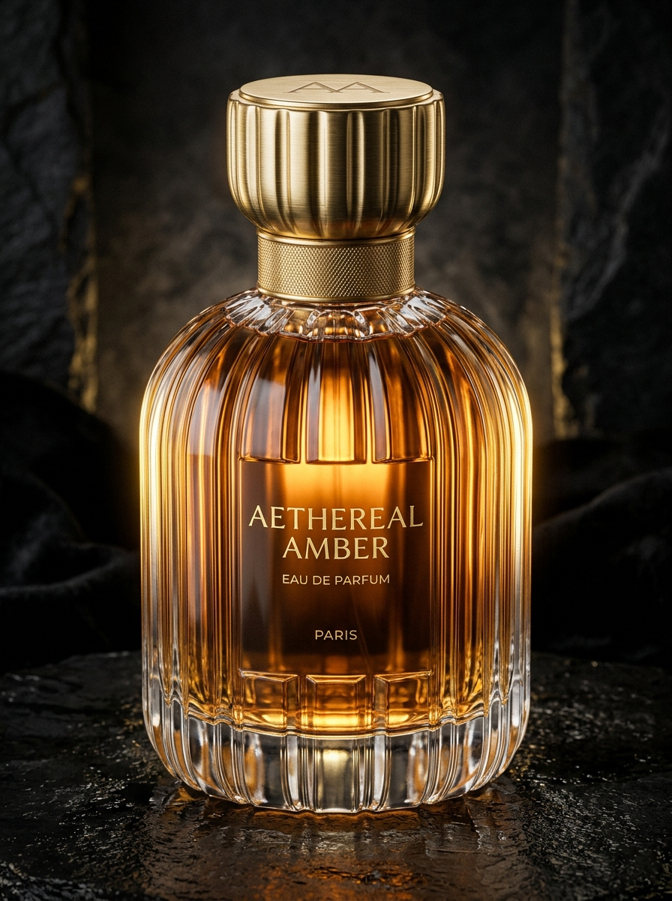

Bottle Silhouette1. Fluted Glass Geometry & Proportions
Architectural ribbed fluting running vertically down the bottle walls with a heavy weighted glass base.
Blender Workflow:
- Cylinder primitive with 24-32 vertical loop cuts.
- Checker deselect → scale inward with Bevel (`Ctrl + B`).
- Solidify modifier + Subdivision Surface (`Ctrl + 2`).